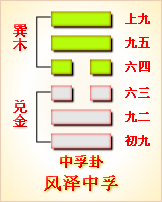

第六十一卦初九爻详解 第六十一卦九二爻详解 第六十一卦六三爻详解
第六十一卦六四爻详解 第六十一卦九五爻详解 第六十一卦上九爻详解
周易第六十一卦 中孚 风泽中孚 巽上兑下
中孚：豚鱼吉，利涉大川，利贞。
彖曰：中孚，柔在内而刚得中。说而巽，孚，乃化邦也。豚鱼吉，信及豚鱼也。利涉大川，乘木舟虚也。中孚以利贞，乃应乎天也。
象曰：泽上有风，中孚;君子以议狱缓死。
初九：虞吉，有他不燕。象曰：初九虞吉， 志未变也。
九二：鸣鹤在阴，其子和之，我有好爵，吾与尔靡之。象曰：其子和之，中心愿也。
六三：得敌，或鼓或罢，或泣或歌。象曰：可鼓或罢，位不当也。
六四：月几望，马匹亡，无咎。象曰：马匹亡，绝类上也。
九五：有孚挛如，无咎。象曰：有孚挛如，位正当也。
上九：翰音登于天，贞凶。象曰：翰音登于天，何可长也。
关键词：周易,中孚卦,风泽中孚,巽上兑下
中孚卦：行礼时献上小猪和鱼，吉利。有利于渡过大江大河。吉利的占问。
初九：行丧礼，吉利。如有变故，就不行燕礼。
九二：鹤在树荫中鸣叫，幼鹤应声附和。我有美酒，与你同 享。
六三：战胜了敌人，有的乘胜追击，有的凯旋收兵，有的高 兴流泪，有的放声歌唱。
六四：月近十五的时候，马匹丢失了。结果没有灾祸。
九五：抓到俘虏，紧紧捆住。没有灾祸。
上九：用鸡祭祖上天。占问得凶兆。
①中孚是本卦的标题。中争的意思是心中诚信。全卦的内容是讲礼仪。标 题与内容有关。
②豚(tun)鱼：小猪和鱼。这两样东西是献祭和行礼时 常用的物品。、
③虞：丧礼，葬礼。
④它：意外事故。燕;用作 “宴”，指宴饮之礼。
⑤阴;用作“荫”，意思是树上荫蔽的地方。
(6) 爵：古代酒器，即酒杯，这里代指酒。
(7)靡：共享，同享。
(8)得敌： 克敌，战胜敌人。
(9)鼓：击鼓追击敌人。罢;停战，收兵。
(10)挛如： 捆得紧紧的样子。
(11)翰音：鸡，这里指用鸡祭天。